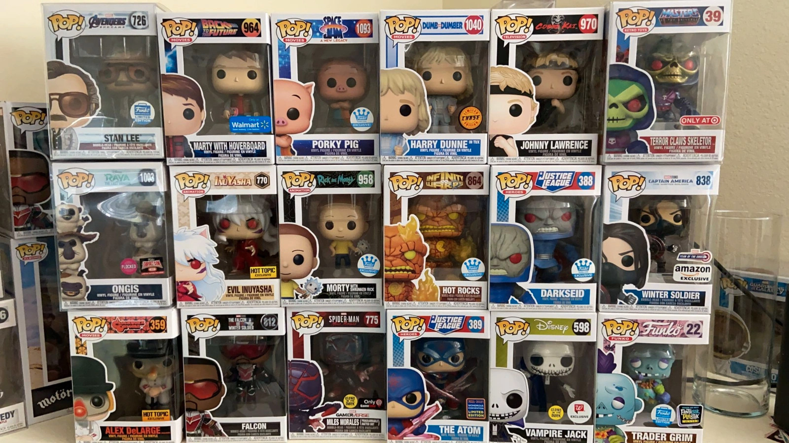

Conoce a nuestro equipo
Antonia Salazar - CEO & Vendedora
antoniasalazar@gmail.ccom - 1168847951
Lucas Abad - Desarrollo & Tecnología
lucasabad80@gmail.com - 1155838452
Nuestra ubicación
Nos encontramos en Caminito, uno de los lugares más emblemáticos de La Boca, Buenos Aires. Caminito es famoso por sus coloridas casas y calles adoquinadas, y está ubicado a pocos metros del Riachuelo y del icónico Estadio de Boca Juniors, también conocido como La Bombonera. Caminito no solo es un destino turístico, sino que también tiene una rica historia que data de finales del siglo XIX, cuando inmigrantes europeos, especialmente italianos, se establecieron en la zona. Con el tiempo, la calle se convirtió en un símbolo cultural, gracias a sus vibrantes colores y al legado artístico de pintores como Benito Quinquela Martín, quien fue fundamental en la transformación del barrio. Hoy en día, La Boca es un barrio lleno de vida, arte y cultura, ideal para visitar y explorar sus galerías al aire libre, tiendas de artesanías y disfrutar de espectáculos de tango. Nuestra tienda se encuentra en este entorno único, siendo parte de la tradición y el encanto de Caminito.
